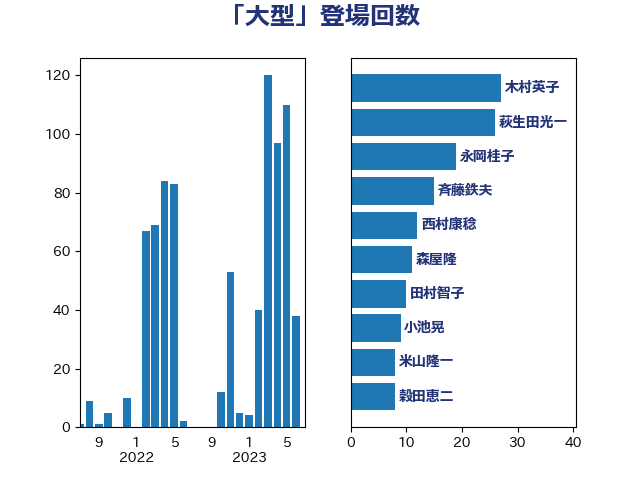

単語「大型」

| 木村英子 | れいわ新選組 | 27 回 |
| 萩生田光一 | 自由民主党 | 26 回 |
| 永岡桂子 | 自由民主党 | 19 回 |
| 斉藤鉄夫 | 公明党 | 15 回 |
| 西村康稔 | 自由民主党 | 12 回 |
| 森屋隆 | 立憲民主党 | 11 回 |
| 田村智子 | 日本共産党 | 10 回 |
| 小池晃 | 日本共産党 | 9 回 |
| 米山隆一 | 立憲民主党 | 8 回 |
| 穀田恵二 | 日本共産党 | 8 回 |
| 城井崇 | 立憲民主党 | 8 回 |
| 紙智子 | 日本共産党 | 7 回 |
| 熊谷裕人 | 立憲民主党 | 7 回 |
| 末松信介 | 自由民主党 | 7 回 |
| 中島克仁 | 立憲民主党 | 7 回 |
| たがや亮 | れいわ新選組 | 7 回 |
| 鈴木義弘 | 国民民主党 | 6 回 |
| 美延映夫 | 日本維新の会 | 6 回 |
| 福島伸享 | 無所属 | 6 回 |
| 矢倉克夫 | 公明党 | 6 回 |
| 新垣邦男 | 立憲民主党 | 6 回 |
| 岸田文雄 | 自由民主党 | 6 回 |
| 高橋克法 | 自由民主党 | 5 回 |
| 高橋光男 | 公明党 | 5 回 |
| 長友慎治 | 国民民主党 | 5 回 |
| 足立敏之 | 自由民主党 | 5 回 |
| 西田昌司 | 自由民主党 | 5 回 |
| 西岡秀子 | 国民民主党 | 5 回 |
| 田村貴昭 | 日本共産党 | 5 回 |
| 片山さつき | 自由民主党 | 5 回 |
| 森山浩行 | 立憲民主党 | 5 回 |
| 宮内秀樹 | 自由民主党 | 5 回 |
| 西銘恒三郎 | 自由民主党 | 4 回 |
| 芳賀道也 | 国民民主党 | 4 回 |
| 石井苗子 | 日本維新の会 | 4 回 |
| 玉木雄一郎 | 国民民主党 | 4 回 |
| 浜田靖一 | 自由民主党 | 4 回 |
| 浅田均 | 日本維新の会 | 4 回 |
| 武村展英 | 自由民主党 | 4 回 |
| 枝野幸男 | 立憲民主党 | 4 回 |
| 松沢成文 | 日本維新の会 | 4 回 |
| 早坂敦 | 日本維新の会 | 4 回 |
| 山添拓 | 日本共産党 | 4 回 |
| 山崎誠 | 立憲民主党 | 4 回 |
| 宮本岳志 | 日本共産党 | 4 回 |
| 塩田博昭 | 公明党 | 4 回 |
| 堀場幸子 | 日本維新の会 | 4 回 |
| 三浦信祐 | 公明党 | 4 回 |
| 高橋千鶴子 | 日本共産党 | 3 回 |
| 金子恵美 | 立憲民主党 | 3 回 |
| 赤嶺政賢 | 日本共産党 | 3 回 |
| 細田博之 | 自由民主党 | 3 回 |
| 福重隆浩 | 公明党 | 3 回 |
| 石垣のりこ | 立憲民主党 | 3 回 |
| 田村まみ | 国民民主党 | 3 回 |
| 田島麻衣子 | 立憲民主党 | 3 回 |
| 浜口誠 | 国民民主党 | 3 回 |
| 櫻井周 | 立憲民主党 | 3 回 |
| 榛葉賀津也 | 国民民主党 | 3 回 |
| 柚木道義 | 立憲民主党 | 3 回 |
| 打越さく良 | 立憲民主党 | 3 回 |
| 山岡達丸 | 立憲民主党 | 3 回 |
| 土田慎 | 自由民主党 | 3 回 |
| 古川元久 | 国民民主党 | 3 回 |
| 勝俣孝明 | 自由民主党 | 3 回 |
| 住吉寛紀 | 日本維新の会 | 3 回 |
| 井上哲士 | 日本共産党 | 3 回 |
| 鬼木誠 | 立憲民主党 | 2 回 |
| 高良鉄美 | 無所属 | 2 回 |
| 青山繁晴 | 自由民主党 | 2 回 |
| 長妻昭 | 立憲民主党 | 2 回 |
| 金城泰邦 | 公明党 | 2 回 |
| 野田佳彦 | 立憲民主党 | 2 回 |
| 輿水恵一 | 公明党 | 2 回 |
| 谷川とむ | 自由民主党 | 2 回 |
| 蓮舫 | 立憲民主党 | 2 回 |
| 舩後靖彦 | れいわ新選組 | 2 回 |
| 緑川貴士 | 立憲民主党 | 2 回 |
| 簗和生 | 自由民主党 | 2 回 |
| 窪田哲也 | 公明党 | 2 回 |
| 神田潤一 | 自由民主党 | 2 回 |
| 石井拓 | 自由民主党 | 2 回 |
| 田中健 | 国民民主党 | 2 回 |
| 浅川義治 | 日本維新の会 | 2 回 |
| 池田佳隆 | 自由民主党 | 2 回 |
| 永井学 | 自由民主党 | 2 回 |
| 櫛渕万里 | れいわ新選組 | 2 回 |
| 柴田巧 | 日本維新の会 | 2 回 |
| 村田享子 | 立憲民主党 | 2 回 |
| 徳永エリ | 立憲民主党 | 2 回 |
| 庄子賢一 | 公明党 | 2 回 |
| 平林晃 | 公明党 | 2 回 |
| 平山佐知子 | 無所属 | 2 回 |
| 岸真紀子 | 立憲民主党 | 2 回 |
| 山本佐知子 | 自由民主党 | 2 回 |
| 山岸一生 | 立憲民主党 | 2 回 |
| 小野泰輔 | 日本維新の会 | 2 回 |
| 小林鷹之 | 自由民主党 | 2 回 |
| 安江伸夫 | 公明党 | 2 回 |
| 大西健介 | 立憲民主党 | 2 回 |
| 大島敦 | 立憲民主党 | 2 回 |
| 大島九州男 | れいわ新選組 | 2 回 |
| 国定勇人 | 自由民主党 | 2 回 |
| 国光あやの | 自由民主党 | 2 回 |
| 吉良よし子 | 日本共産党 | 2 回 |
| 北神圭朗 | 無所属 | 2 回 |
| 加藤勝信 | 自由民主党 | 2 回 |
| 八木哲也 | 自由民主党 | 2 回 |
| 伊波洋一 | 無所属 | 2 回 |
| 井原巧 | 自由民主党 | 2 回 |
| 中野英幸 | 自由民主党 | 2 回 |
| 三宅伸吾 | 自由民主党 | 2 回 |
| 高鳥修一 | 自由民主党 | 1 回 |
| 高橋はるみ | 自由民主党 | 1 回 |
| 高木真理 | 立憲民主党 | 1 回 |
| 高市早苗 | 自由民主党 | 1 回 |
| 馬淵澄夫 | 立憲民主党 | 1 回 |
| 青柳陽一郎 | 立憲民主党 | 1 回 |
| 阿部弘樹 | 日本維新の会 | 1 回 |
| 阿達雅志 | 自由民主党 | 1 回 |
| 長坂康正 | 自由民主党 | 1 回 |
| 鈴木宗男 | 日本維新の会 | 1 回 |
| 野間健 | 立憲民主党 | 1 回 |
| 野田国義 | 立憲民主党 | 1 回 |
| 野村哲郎 | 自由民主党 | 1 回 |
| 里見隆治 | 公明党 | 1 回 |
| 遠藤良太 | 日本維新の会 | 1 回 |
| 近藤昭一 | 立憲民主党 | 1 回 |
| 豊田俊郎 | 自由民主党 | 1 回 |
| 谷田川元 | 立憲民主党 | 1 回 |
| 谷公一 | 自由民主党 | 1 回 |
| 角田秀穂 | 公明党 | 1 回 |
| 西田昭二 | 自由民主党 | 1 回 |
| 西村智奈美 | 立憲民主党 | 1 回 |
| 藤原崇 | 自由民主党 | 1 回 |
| 菅家一郎 | 自由民主党 | 1 回 |
| 若林健太 | 自由民主党 | 1 回 |
| 篠原孝 | 立憲民主党 | 1 回 |
| 笠井亮 | 日本共産党 | 1 回 |
| 福田昭夫 | 立憲民主党 | 1 回 |
| 神谷宗幣 | 参政党 | 1 回 |
| 石川博崇 | 公明党 | 1 回 |
| 石井章 | 日本維新の会 | 1 回 |
| 石井浩郎 | 自由民主党 | 1 回 |
| 石井正弘 | 自由民主党 | 1 回 |
| 白石洋一 | 立憲民主党 | 1 回 |
| 田名部匡代 | 立憲民主党 | 1 回 |
| 甘利明 | 自由民主党 | 1 回 |
| 牧山ひろえ | 立憲民主党 | 1 回 |
| 湯原俊二 | 立憲民主党 | 1 回 |
| 渡辺猛之 | 自由民主党 | 1 回 |
| 渡辺博道 | 自由民主党 | 1 回 |
| 深澤陽一 | 自由民主党 | 1 回 |
| 浜田聡 | NHK党 | 1 回 |
| 浅野哲 | 国民民主党 | 1 回 |
| 河野義博 | 公明党 | 1 回 |
| 池畑浩太朗 | 日本維新の会 | 1 回 |
| 池下卓 | 日本維新の会 | 1 回 |
| 武部新 | 自由民主党 | 1 回 |
| 横沢高徳 | 立憲民主党 | 1 回 |
| 森田俊和 | 立憲民主党 | 1 回 |
| 梅谷守 | 立憲民主党 | 1 回 |
| 松川るい | 自由民主党 | 1 回 |
| 東徹 | 日本維新の会 | 1 回 |
| 東国幹 | 自由民主党 | 1 回 |
| 平木大作 | 公明党 | 1 回 |
| 川田龍平 | 立憲民主党 | 1 回 |
| 川崎ひでと | 自由民主党 | 1 回 |
| 岩谷良平 | 日本維新の会 | 1 回 |
| 岩渕友 | 日本共産党 | 1 回 |
| 岩本剛人 | 自由民主党 | 1 回 |
| 山田賢司 | 自由民主党 | 1 回 |
| 山本太郎 | れいわ新選組 | 1 回 |
| 山本剛正 | 日本維新の会 | 1 回 |
| 山下芳生 | 日本共産党 | 1 回 |
| 尾辻秀久 | 無所属 | 1 回 |
| 尾崎正直 | 自由民主党 | 1 回 |
| 小西洋之 | 立憲民主党 | 1 回 |
| 小沢雅仁 | 立憲民主党 | 1 回 |
| 小川淳也 | 立憲民主党 | 1 回 |
| 小山展弘 | 立憲民主党 | 1 回 |
| 小寺裕雄 | 自由民主党 | 1 回 |
| 宮本周司 | 自由民主党 | 1 回 |
| 宮口治子 | 立憲民主党 | 1 回 |
| 室井邦彦 | 日本維新の会 | 1 回 |
| 宗清皇一 | 自由民主党 | 1 回 |
| 守島正 | 日本維新の会 | 1 回 |
| 奥野総一郎 | 立憲民主党 | 1 回 |
| 奥下剛光 | 日本維新の会 | 1 回 |
| 大岡敏孝 | 自由民主党 | 1 回 |
| 大口善徳 | 公明党 | 1 回 |
| 堀井巌 | 自由民主党 | 1 回 |
| 嘉田由紀子 | 無所属 | 1 回 |
| 吉良州司 | 無所属 | 1 回 |
| 吉田統彦 | 立憲民主党 | 1 回 |
| 吉田はるみ | 立憲民主党 | 1 回 |
| 吉井章 | 自由民主党 | 1 回 |
| 古賀之士 | 立憲民主党 | 1 回 |
| 古川康 | 自由民主党 | 1 回 |
| 勝目康 | 自由民主党 | 1 回 |
| 冨樫博之 | 自由民主党 | 1 回 |
| 伊藤孝江 | 公明党 | 1 回 |
| 伊藤孝恵 | 国民民主党 | 1 回 |
| 伊藤俊輔 | 立憲民主党 | 1 回 |
| 井坂信彦 | 立憲民主党 | 1 回 |
| 中川康洋 | 公明党 | 1 回 |
| 上田清司 | 国民民主党 | 1 回 |
| 三木圭恵 | 日本維新の会 | 1 回 |
| ながえ孝子 | 無所属 | 1 回 |
| おおつき紅葉 | 立憲民主党 | 1 回 |